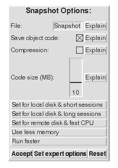

Snapshots
Save snapshot - writes to default name Save Snapshot as... -- dialog allows name, options to be changed,  Quit... -- allows you to quit, save then quit, or cancel. |
More practical issues: saving, quitting, resumingAs you work in Self, you will create new objects and modify existing objects. At any point, you can save the current state of all objects in the system in a snapshot file. Use the `Save snapshot' or `Save snapshot as...' menu items on the background middle-button (yellow) menu.` `Save snapshot' writes to the default name, which is usually the same name used at start-up. Saving a snapshot does not overwrite an existing snapshot; the old snapshot is renamed to have a .backup suffix (which may lose a previous backup). `Save snapshot as...' engages the user in a dialog. The dialog allows the user to change the default snapshot name, and set various snapshot-related options. These are explained in the dialog; we will not cover them here. You can quit the system using the `Quit...' menu item. This will give you the options of saving a snapshot before quitting, quitting immediately, or continuing in the system. When you restart a snapshot, the Self system, including the user interface, will be restored to its state at the time that the snapshot was made. (Exception: Release 4.0 does not save the state of processes in snapshots. Thus, processes that were running must be restarted when the snapshot is restarted. For system processes (such as the user interface), this is done automatically. The state of suspended processes, including those being debugged, is, unfortunately, lost.) It is a good idea to make snapshots periodically as you work, especially before introducing a risky change. If you wish to keep multiple snapshots, but disk space is at a premium, you should investigate the compression and code-saving options on the snapshot dialog.
|